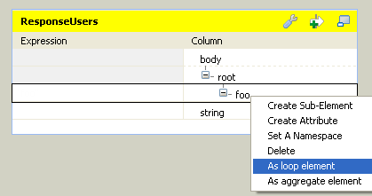
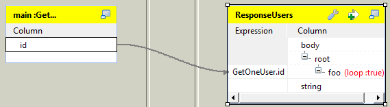
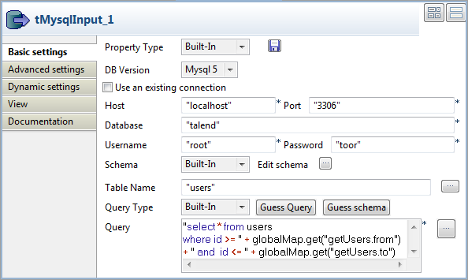
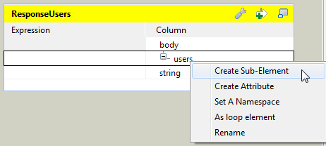
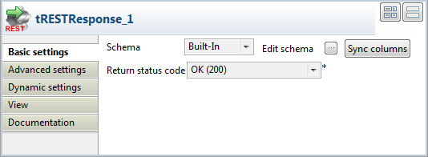
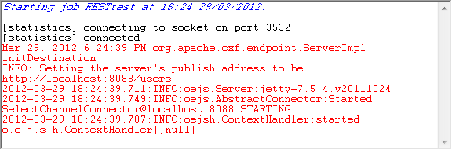

Avertissement
Ce composant est disponible pour les utilisateurs du Studio ESB.
|
Famille de composant |
ESB/REST | |
|
Fonction |
Le tRestRequest est un composant côté serveur acceptant les requêtes HTTP et/ou HTTPS des clients et supportant les méthodes HTTP GET, POST, PUT et DELETE. NotePour activer le support de l'HTTPS, vous devez générer un keystore et ajouter quelques propriétés liées à la configuration de sécurité HTTPS dans le fichier org.ops4j.pax.web.cfg de votre conteneur Talend Runtime. Pour plus d'informations, consultez le Talend ESB Container Administration Guide (en anglais). | |
|
Objectif |
Ce composant vous permet de recevoir les requêtes GET/POST/PUT/DELETE des clients, du côté serveur. | |
|
Basic settings |
REST Endpoint |
Renseignez ce champ en saisissant l'emplacement de l'URI où le service Web RESTful sera accessible pour les requêtes. NoteSi vous voulez que votre service soit disponible à la fois sur HTTP et HTTPS, renseignez ce champ avec un chemin relatif. |
|
|
REST API Mapping |
Cliquez sur le bouton [+] sous la table de mapping pour ajouter des lignes pour spécifier des requêtes HTTP : Output Flow : Cliquez sur le bouton [...] afin de spécifier le nom d'un flux de sortie et configurez le schéma du flux de sortie dans la boîte de dialogue qui suit. Le schéma n'est pas obligatoire, donc, si vous ne devez pas passer des paramètres supplémentaires au composant tRESTRequest, vous pouvez laisser le schéma vide. Cependant, vous devez alimenter le schéma si vous avez des paramètres URI Path définis dans le champ URI Pattern ou si vous devez ajouter des paramètres facultatifs de requêtes, tels que URI Query, HTTP Header ou Form parameters à l'URI spécifiée dans le champ REST Endpoint. Si vous spécifiez des paramètres d'URI dans le schéma du flux de sortie, vous devez définir le type de paramètre dans le champ Comment du schéma. Par défaut, si vous laissez le champ Comment vide, le paramètre est considéré comme un paramètre Path. Voici une liste des valeurs supportées dans Comment :
NoteIl est recommandé de définir les valeurs par défaut de vos paramètres facultatifs (Header, Query, Form). pour ce faire, renseignez les colonnes Default du schéma. HTTP Verb : Sélectionnez une méthode HTTP (GET/POST/PUT/DELETE) dans la liste. URI pattern : Renseignez ce champ avec les URIs RESTful décrivant la ressource. |
|
|
Use HTTP Basic Authentication |
Cochez cette case pour activer la méthode d'authentification HTTP Basic dans ce service. |
|
Advanced settings |
tStatCatcher Statistics |
Cochez cette case pour collecter les données de log, aussi bien au niveau du Job qu’au niveau de chaque composant. |
|
Utilisation |
Ce composant permet d'exposer un Job Talend en tant que service et de transmettre une requête à un service dans un Job puis retourne les résultats du Job en tant que réponse du service. Le composant tRESTRequest doit être utilisé avec le tRESTResponse afin de fournir les résultats d'un Job en tant que réponse, dans le cas d'une communication de style requête-réponse. | |
Ce scénario décrit le processus d'acceptation d'une requête HTTP du client, son traitement et l'envoi de sa réponse.

Déposez les composants suivants de la Palette dans l'espace de modélisation graphique : tRESTRequest, tXMLMap et tRESTResponse.
Double-cliquez sur le composant tRESTRequest dans l'espace de modélisation graphique afin d'afficher sa vue Basic settings.

Dans le champ REST Endpoint, saisissez l'URI à laquelle le service Web REST sera accessible pour les requêtes, par exemple "http://192.168.0.235:8088/user".
Note
Si vous voulez que votre service soit disponible à la fois sur HTTP et HTTPS, renseignez ce champ avec un chemin relatif. Par exemple, si vous saisissez "/test", votre service sera disponible à la fois sur http://<EndpointHTTPParDéfaut>/test et https://<EndpointHTTPSParDéfaut>/test, à condition que vous ayez configuré votre conteneur d'exécution pour supporter l'HTTPS. Pour plus d'informations, consultez le Talend ESB Container Administration Guide (en anglais).
Cliquez sur le bouton [+] pour ajouter une ligne dans la table REST API Mapping.
Sélectionnez la nouvelle ligne et cliquez sur le bouton [...] de la colonne Output Flow afin d'ajouter un schéma pour le flux de sortie.
Dans ce scénario, nommez le flux de sortie GetOneUser.

Cliquez sur le bouton [+] afin d'ajouter une ligne id au schéma. Cliquez sur OK pour sauvegarder le schéma.
Sélectionnez GET dans la colonne HTTP Verb.
Dans la colonne URI Pattern, saisissez
"/{id}/".
Reliez le composant tRESTRequest au tXMLMap à l'aide d'un lien Row > GetOneUser.
Double-cliquez sur le tXMLMap dans l'espace de modélisation graphique pour ouvrir le Map Editor.

Cliquez sur le bouton [+] en haut à droite afin d'ajouter une table de sortie et nommez-la ResponseUsers.
Cliquez sur le bouton [+] en bas à droite pour ajouter deux colonnes en sortie.
Nommez la première colonne body et, dans la colonne Type, sélectionnez Document.
Nommez la seconde colonne string et, dans la colonne Type, sélectionnez String.
Cliquez-droit sur le nœud root et sélectionnez Create Sub-Element pour créer un sous-élément.

Nommez le sous-élément foo dans la boîte de dialogue qui s'ouvre.
Cliquez-droit sur le nœud foo et sélectionnez As loop element.
Sélectionnez la colonne id de la table GetOneUser et déposez-la dans le champ Expression du nœud foo dans la table ResponseUsers.
Cliquez sur OK afin de sauvegarder les paramètres.
Reliez le tXMLMap au tRESTResponse à l'aide d'un lien Row > ResponseUsers.
Cliquez sur le bouton Sync columns pour récupérer le schéma du composant précédent.

Sélectionnez OK(200) dans la liste Return status code.
Laissez les autres paramètres tels qu'ils sont.


Ce scénario décrit comment utiliser les paramètres URI query dans le tRESTRequest afin d'explorer les données d'une base de données et d'envoyer la réponse via le tRESTResponse.
Pour ce faire, vous devez créer deux sous-jobs connectés à l'aide d'un lien OnSubjobOk. Ainsi, les deux sous-jobs seront exécutés séquentiellement. Pour plus d'informations concernant les connexions Trigger, consultez le Guide utilisateur de Talend Open Studio. Le premier sous-job crée et alimente la base de données. Le second permet d'explorer la base de données via le service REST.
Pour ce faire, procédez comme suit :
Déposez les composants suivants de la Palette dans l'espace de modélisation graphique : tFixedFlowInput de la famille Misc et tMysqlOutput de la famille Databases > Mysql.
Reliez le tFixedFlowInput au tMysqlOutput à l'aide d'un lien Row > Main.
Double-cliquez sur le tFixedFlowInput pour afficher sa vue Basic settings :

Cliquez sur le bouton [...] à côté du champ Edit schema pour ouvrir l'éditeur du schéma.

Dans l'éditeur du schéma, cliquez trois fois sur le bouton [+] afin d'ajouter trois lignes. Paramétrez-les comme dans la capture d'écran.
Cliquez sur OK.
Retournez dans les propriétés du tFixedFlowInput, dans sa vue Basic settings. Dans la zone Mode, sélectionnez l'option Use inline table.
Sous le tableau, cliquez trois fois sur le bouton [+] afin d'ajouter trois lignes.
Dans le tableau, cliquez sur le champ id de la première ligne et saisissez 1.
Cliquez sur le champ firstname de la première ligne, appuyez sur les touches Ctrl+Espace pour afficher la liste d'autocomplétion et sélectionnez la variable TalendDataGenerator.getFirstName() dans la liste.
Cliquez sur le champ lastname de la première ligne, appuyez sur les touches Ctrl+Espace pour afficher la liste d'autocomplétion et sélectionnez la variable TalendDataGenerator.getLastName() dans la liste.
Répétez l'opération pour les lignes suivantes, afin d'obtenir les mêmes paramètres que dans la capture d'écran.
Double-cliquez sur le tMysqlOutput pour afficher sa vue Basic settings.

Dans la liste Property Type, laissez sélectionné le mode Built-in et renseignez les champs Host, Port, Database, Username et Password manuellement. Si vous avez centralisé vos informations de connexion à la base de données dans le nœud Metadata > DB Connections du Repository, vous pouvez sélectionner Repository dans la liste. Les champs seront automatiquement renseignés.
Pour plsu d'informations concernant le stockage des métadonnées, consultez le Guide utilisateur de Talend Open Studio.
Dans le champ Table, saisissez le nom de la table dans laquelle les données vont être chargées, par exemple : users.
Dans la liste Action on table, sélectionnez Drop table if exists and create, puis sélectionnez Insert dans la liste Action on data.
Cliquez sur Sync columns pour récupérer le schéma provenant du composant précédent.
Pour ce faire, procédez comme suit :
Glissez-déposez les composants suivants, comme dans la première capture d'écran.
Un tRESTRequest et un tRESTResponse de la famille ESB > REST,
un tFlowToIterate de la famille Orchestration,
un tMysqlInput de la famille Databases > Mysql,
un tXMLMap de la famille Processing.
Pour ce faire, procédez comme suit :
Double-cliquez sur le tRESTRequest dans l'espace de modélisation graphique afin d'afficher sa vue Basic settings.

Renseignez le champ REST Endpoint avec l'emplacement de l'URI où le service Web REST-ful sera accessible pour les requêtes. Par exemple, "http://localhost:8088/users".
Cliquez sur le bouton [+] pour ajouter une ligne dans le tableau REST API Mapping.
Sélectionnez la nouvelle ligne et cliquez sur le bouton [...] dans la colonne Output Flow afin d'ajouter un schéma au flux de sortie.
Dans la boîte de dialogue, nommez le flux de sortie getUsers. Un éditeur de schéma s'ouvre.

Dans l'éditeur de schéma, cliquez deux fois sur le bouton [+] pour ajouter deux lignes et paramétrez-les comme dans la capture d'écran ci-dessus.
Cliquez sur OK.
Retournez dans les propriétés du tRESTRequest, dans sa vue Basic settings, sélectionnez GET dans la liste de la colonne HTTP Verb.
Laissez la colonne URI Pattern telle qu'elle est.
Vous avez créé le flux de sortie du tRESTRequest, vous pouvez donc utiliser le lien correspondant pour le connecter au composant suivant :
Connectez le tRESTRequest au tFlowToIterate à l'aide d'un lien Row > getUsers.
Laissez les paramètres du tFlowToIterate tels qu'ils sont.
Connectez le tFlowToIterate au tMysqlInput à l'aide d'un lien Row > Iterate.
Pour ce faire, procédez comme suit :
Double-cliquez sur le tMysqlInput pour afficher sa vue Basic settings.
Dans la liste Property Type, sélectionnez Built-in et renseignez les champs Host, Port, Database, Username et Password manuellement. Si vous avez centralisé vos informations de connexion dans le nœud Metadata > DB Connections du Repository, vous pouvez sélectionner Repository dans la liste. Les champs seront automatiquement renseignés.
Pour plus d'informations concernant le stockage des métadonnées, consultez le Guide utilisateur de Talend Open Studio.
Dans la liste Schema, sélectionnez Built-in et cliquez sur le bouton [...] à côté du champ Edit schema.
Dans l'éditeur de schéma, définissez le schéma exactement comme celui du tFixedFlowInput.
Dans le champ Table Name, renseignez le nom de la table dans laquelle les données sont stockées : users.
Dans la liste Query Type, sélectionnez Built-in et renseignez le champ Query avec la requête SQL suivante, permettant d'explorer les données de la base de données via la requête d'URI définie dans le composant tRESTRequest
"select * from users where id >= " + globalMap.get("getUsers.from") + " and id <= " + globalMap.get("getUsers.to")
Cliquez-droit sur le composant tMysqlInput, maintenez et déposez sur le tXMLMap afin de connecter les deux composants.
Double-cliquez sur le tXMLMap dans l'espace de modélisation graphique pour ouvrir le Map Editor.

Cliquez sur le bouton [+] dans le coin supérieur droit afin d'ajouter une sortie. Nommez-la ResponseUsers.
Cliquez sur le bouton [+] en bas à droite pour ajouter deux colonnes de sortie.
Nommez la première colonne body et paramétrez son Type à Document.
Nommez la seconde colonne string et paramétrez son Type à String.
Cliquez-droit sur le nœud root, sélectionnez Rename dans la liste et renommez-le users
Cliquez-droit sur le nœud root et sélectionnez Create Sub-Element afin de créer un sous-élément.
Nommez le sous-élément user dans la boîte de dialogue qui apparaît.
Cliquez-droit sur le nœud user créé à l'étape précédente et sélectionnez As loop element.

Sélectionnez la colonne id de la table row2, à gauche, et déposez-la sur le nœud user de la table ResponseUsers, à droite.

Dans la boîte de dialogue [Selection], sélectionnez l'option Create as attribute of target puis cliquez sur OK.
Sélectionnez les colonnes firstname et lastname de la table row2et déposez-les sur le nœud user de la table ResponseUsers.

Dans la boîte de dialogue [Selection], sélectionnez l'option Create as sub-element of target node et cliquez sur OK.
Cliquez sur l'icône de clé anglaise, en haut de la table ResponseUsers pour ouvrir le panneau de paramétrage.

Paramétrez la fonctionnalité All in one à true. Ainsi, toutes les données XML sont écrites dans un seul flux.
Cliquez sur OK afin de sauvegarder les paramètres.
Connectez le tXMLMap au tRESTResponse à l'aide d'un lien Row > ResponseUsers.
Double-cliquez sur le tRESTResponse dans l'espace de modélisation graphique pour afficher sa vue Basic settings.
Cliquez sur Sync columns afin de récupérer le schéma défini dans le composant précédent.
Laissez les autres paramètres tels qu'ils sont.
Les deux sous-jobs sont créés, vous pouvez donc les connecter.
Cliquez-droit sur le composant tFixedFlowInput du premier sous-job.
Sélectionnez Trigger > OnSubjobOk dans la liste.
Cliquez sur le composant tRESTRequest du second sous-job.
Ainsi, lors de l'exécution du Job, le second sous-job est exécuté uniquement si l'exécution du premier s'est déroulée correctement.
Sauvegardez le Job et appuyez sur F6 pour l'exécuter.
Ouvrez votre navigateur si vous souhaitez tester le service.
Par exemple, utilisez la requête d'URI
?to=2afin de récupérer les données des deux premiers utilisateurs.
La requête HTTP pour l'ID d'un utilisateur est acceptée par le service REST et la réponse HTTP est retournée au serveur.